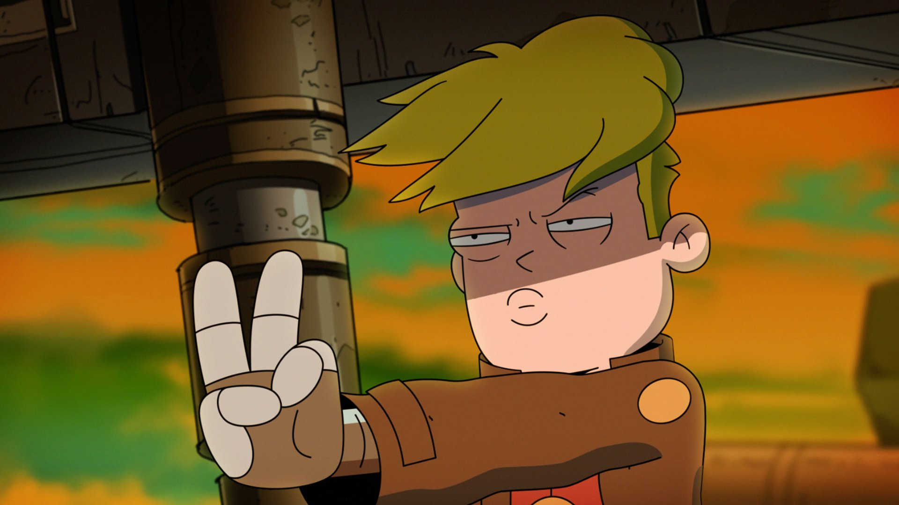

Garry Goodspeed
Gary Goodspeed is the son of John Goodspeed, an Infinity Guard captain who died while Gary was a child on a mission to close a breach to Final Space. Gary was abandoned by his mother, Sheryl Goodspeed, shortly after his father's death and forced into a life of crime. Years later, an emotionally stunted adult Gary impersonated an Infinity Guard soldier to impress officer Quinn Ergon, but accidentally destroyed 92 spaceships (plus a Mexican restaurant), and was sentenced to a 5-year prison sentence on the Galaxy One, where, on his final year of imprisonment, would meet and befriend a planet-destroying alien named Mooncake, and the Ventrexian bounty hunter Avocato, which subsequently puts him on a life-changing journey to unlock the mystery of Final